|
Курсы
Регистрация
Методика
Оглавление
Для учащихся

Статьи
Инструменты
Контакты
|
Урок
2. Создание регистрации в игре
1.1.
Таблица регистрационной
информации.
Для того, чтоб пользователь мог войти в создаваемый
нами игровой мир, он должен пройти регистрацию на нашем сайте онлайновой игры.
Обычно регистрация состоит из заполнения десятка обязательных и необязательных
полей, где потенциальный игрок делится с разработчиком информацией о себе и
придумывает имя персонажа, которым впоследствии намеревается играть.
Чтоб сохранить всю эту введенную информацию у нас в базе,
нам для начала нужна сама база, посему давайте ее создадим.
Мы можем воспользоваться поставляемым вместе с пакетом
Denwer инструментом PHPMyAdmin
http://localhost/Tools/phpmyadmin/index.php
(где в разделе Создать новую БД
- вписать
название mmclub - так мы будем именовать нашу базу, и нажать Создать)
Для того чтоб все это сделать в программе EMS MySQL Manager
нужно проделать следующие шаги:
1. После запуска программы, мы должны зарегистрировать хост. Жмем правой
кнопкой на правой панели и выбираем Register Host
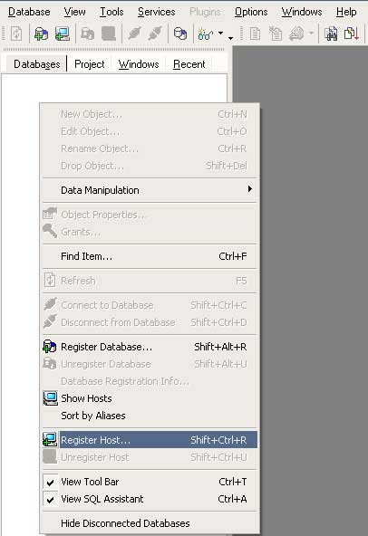
выбираем из списка localhost и вводим для него логин root
поле пароля оставляем пустым
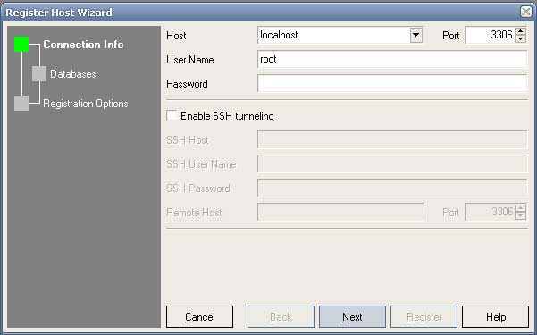
должен высветиться список созданных баз. Если вы уже создали базу mmclub в
phpMyAdmin выбираем ее и переносим в правое поле (Selected Databases)
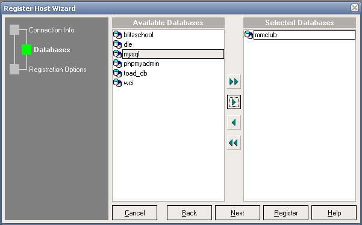
Нажимаем Register и выбранная база становится доступной в левой панели. Если мы
щелкнем левой кнопкой мыши по названию (алиасу)
нашей базы mmclub on
localhost, то откроется список входящих в нее таблиц
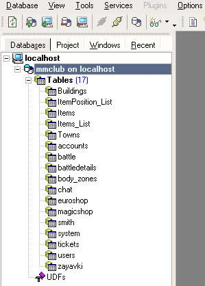
Естественно, у Вас пока в ней не будет таблиц, но они будут по мере прохождения
наших занятий.
Если база ранее не была создана в phpMyAdmin, то выберите пункт меню:
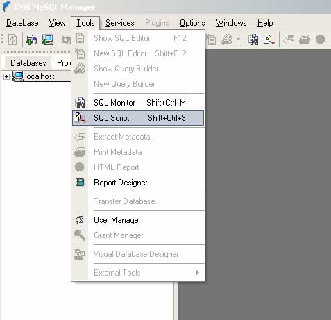
Инструменты - > SQL Скрипт (Tools
-> SQL Script) и введите в открывшемся окне
такие строки:
|
CREATE DATABASE mmclub DEFAULT CHARACTER SET cp1251 COLLATE
cp1251_general_ci; |
Затем нажмите на треугольнике
(показано на Рис.1 красной стрелочкой) для выполнения скрипта.
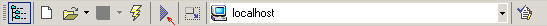
Рис.1
Убедитесь что в выпадающем списке хостов у Вас выбран именно
localhost.
Рекомендуем Вам воспользоваться именно вторым способом создания базы (то есть
пользоваться программой EMS MySQL Manager
), так как в
дальнейшем мы будем добавлять в этот скрипт еще большое количество таблиц и
данных.
Результатом выполнения скрипта будет создание базы
mmclub ( Might and Magic Club )
Сама база разместится у Вас на диске по такому пути:
C:\WebServers\usr\local\mysql4\data\mmclub
когда мы начнем добавлять таблицы в нашу базу, Вы заметите, что в этой
папке добавляются файлы, содержащие данные из этих таблиц.
Наша база данных недолго будет оставаться пустой, поскольку мы с Вами сейчас
создадим в ней самую главную таблицу, которая будет содержать информацию об
игроках. Назовем таблицу users. Немного изменим наш скрипт:
DROP
DATABASE mmclub;
CREATE DATABASE mmclub DEFAULT CHARACTER SET cp1251 COLLATE
cp1251_general_ci;
USE mmclub; |
Команда
DROP DATABASE
- физически удаляет базу. Если не
выполнить эту команду, то команда
CREATE DATABASE
выдаст ошибку, что такая база
уже существует.
И наконец откроем базу для использования командой:
USE.
Нажимаем на треугольнике для выполнения скрипта (или кнопку
F9 на клавиатуре)
Дело сделано, пришло время добавления таблицы пользователей.
--Таблица
персонажей
CREATE TABLE users (
USER_ID bigint(20) unsigned NOT NULL auto_increment,
Nick_Name CHAR(32) UNIQUE,
User_Pass CHAR(32),
SessionID bigint,
User_EMail CHAR(64) UNIQUE,
Security_Answer CHAR(30),
Full_Name CHAR(50),
User_Birth_Day DATE NOT NULL,
Character_Birth_Day DATE NOT NULL,
User_Gender SMALLINT(1),
User_City CHAR(32),
ICQ_Number CHAR(16),
PRIMARY KEY (`USER_ID`)
) ENGINE=MyISAM DEFAULT CHARSET=cp1251; |
Давайте разберемся, для чего эти
поля.
USER_ID
- будет хранить уникальный идентификационный номер созданного игроком персонажа
и автоматом будет увеличиваться на единицу с каждым новым зарегистрированным
пользователем (о чем свидетельствует ключевое слово
auto_increment)
Nick_Name
- тоже уникальное поле, в котором будет храниться логин персонажа. Если при
регистрации, игрок введет логин, который уже есть в таблице users
у другого ранее зарегистрировавшегося пользователя, то он должен
будет быть предупрежден об этом и выбрать себе другой логин (Nick_Name)
User_Pass
- пароль пользователя
(для простоты будем хранить его в таблице в открытом текстовом виде, хотя можно
было бы применить ну хотя бы простейшее MD5 шифрование )
SessionID
- нужно нам для
служебных целей и мы остановимся на этом чуть позже.
User_EMail
- почтовый адрес
регистрирующегося юзера.
Security_Answer
- выбранный при регистрации пользователя секретный ответ на один из вопросов
регистрационный формы (впоследствии может помочь восстановить забытый пароль)
Full_Name
- ФИО игрока
User_Birth_Day
- день рождения игрока
(реальный день рождения играющего).
Character_Birth_Day
- дата создания
персонажа в клубе (системная дата сервера на момент регистрации)
User_Gender
- пол игрока.
User_City
- город рождения играющего (впоследствии может нам пригодится, для того чтоб
вести статистику - из каких стран и городов больше всего собралось играющих в
нашем клубе)
ICQ_Number
- ICQ игрока.
Безусловно это только верхушка айсберга нашей с Вами таблицы users
и мы ее еще будем дополнять на протяжении наших уроков, вводя нужные поля по
мере появления в них необходимости.
Итак, наш скрипт целиком выглядит так:
DROP
DATABASE mmclub;
CREATE DATABASE mmclub DEFAULT CHARACTER SET cp1251 COLLATE
cp1251_general_ci;
USE mmclub;
--Таблица персонажей
CREATE TABLE users (
USER_ID bigint(20) unsigned NOT NULL auto_increment,
Nick_Name CHAR(32) UNIQUE,
User_Pass CHAR(32),
SessionID bigint,
User_EMail CHAR(64) UNIQUE,
Security_Answer CHAR(30),
Full_Name CHAR(50),
User_Birth_Day DATE NOT NULL,
Character_Birth_Day DATE NOT NULL,
User_Gender SMALLINT(1),
User_City CHAR(32),
ICQ_Number CHAR(16),
PRIMARY KEY (`USER_ID`)
) ENGINE=MyISAM DEFAULT CHARSET=cp1251;
|
Если кто не особо знаком с базой
MySQL то заметим, что тип таблиц для нашего клуба мы
выбрали MyISAM. MyISAM – это стандартный тип
таблиц в MySQL.
Он основывается на коде
ISAM
и обладает в сравнении с ним большим количеством полезных
дополнений. MyISAM-таблицы идеально
оптимизированы для использования в
WWW, где преобладают запросы на чтение. Таблицы типа MyISAM
показывают хорошие результаты при выборках SELECT. Во многом это
связано с отсутствием поддержки транзакций и внешних ключей.
Если вы теперь загляните в папку C:\WebServers\usr\local\mysql4\data\mmclub
то увидите, что там появились несколько файлов: Индексные файлы имеют расширение
.MYI (MYIndex). Файлы с расширением .MYD (MYData) содержат
данные, а с расширением .frm – схему таблицы. Если индексный
файл по какой-то причине теряется, программа перестраивает
индексы, используя информацию из frm-файла. Пока
что у нас создались файлы:
users.frm, users.MYD, users.MYI.
Users.frm - содержит только голую структуру таблицы,
поскольку мы не ввели в него никаких данных и ни один пользователь не
зарегистрировался в нашей с Вами игре. Да и как он может зарегистрироваться,
если у нас до сих пор нет формы регистрации! Что ж, пора исправлять эту
несправедливость и переходить к следующему разделу нашего урока.
Смотрите полный код
sql-скрипта создания базы и таблицы
здесь.
1.2.
Форма ввода данных пользователя.
Форма ввода данных пользователя - это дверь, через которую игрок
попадает во вселенную нашего игрового мира. Все данные которые, он честно введет
в соответствующие поля ввода на странице браузера в регистрационной анкете
попадут в нашу таблицу users и будет затем
использоваться для авторизации пользователя в игре.
Итак для создания анкеты для регистрации игрока, создадим пустой
файл с расширением .html или .phtml.
Давайте назовем его
reg.phtml.
Вы можете пользоваться любым удобным для Вас редактором
HTML (FrontPage, DreamWeaver ) или просто
набирать код страницы вручную в текстовом редакторе.
Для более удачного размещения полей ввода, можно создать таблицу (<TABLE>)
Так, если Вы создаете эту форму вручную, фрагмент кода для ввода логина и пароля
пользователя будет выглядеть так:
<html>
<head>
</head>
<body>
<form name=regform action="testreg.phtml" method=POST onSubmit="feedbackSubmit()">
<TABLE width=515 cellPadding=0 border=0
style="border-style: dashed; border-width: 1px" bgcolor="#FFE5B6">
<TR>
<TD width="72">Логин:<font
color="#FF0000">*</font></TD>
<TD width="204"><INPUT name=nickname
size="20"></TD>
<TD width="98">Пароль:<font
color="#FF0000">*</font></TD>
<TD width="193"><INPUT type=password name=pass
size="20"></TD>
</TR>
</TABLE>
</body>
</html> |
Если вы решили воспользоваться
визуальным редактором (к примеру FrontPage)
то можно легко, в режиме проектирования создать такую форму, а
HTML-код за вас создаст сам редактор.
Какие же поля, нам нужно создать для заполнения пользователем! Кроме уже
вышеперечисленных Логина и Пароля, которые называются
nickname
и pass
соответственно нам понадобятся поля
для ввода e-mail и ФИО игрока:
<TR>
<TD>E-Mail<font
color="#FF0000">*</font></TD>
<TD width="204"><INPUT name=email
size="20"></TD>
<TD>ФИО<font color="#FF0000">*</font></TD>
<TD><INPUT name=fio
size="37"></TD>
</TR> |
Выбор (радио-кнопки) пола игрока:
<INPUT TYPE="radio"
NAME="gender" value="Мужской" style="cursor:hand"
ID=A1 checked><LABEL FOR=A1> Мужской </LABEL>
<INPUT TYPE="radio" NAME="gender" value="Женский"
style="cursor:hand" ID=A2><LABEL FOR=A2> Женский</LABEL> |
а также информация о городе и
ICQ игрока и дате его рождения. Полный код странички вы
можете посмотреть здесь. Можно также обязать игрока прочитать правила
нашего клуба и согласиться с ними, поставив птичку (check-button)
Ну и конечно, нам понадобится кнопка для завершения регистрации и отправки формы
к нам в базу данных (а точнее - отправки значений заполненных полей к нам в
таблицу users)
На рисунке (Рис.2) вы видите, что у нас с Вами получилось:
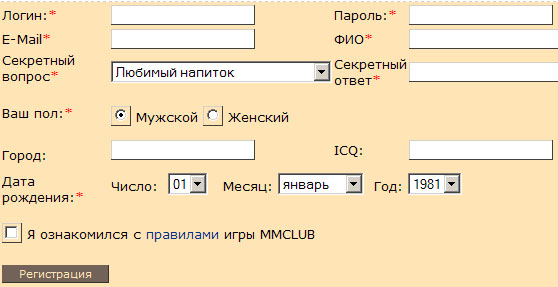
Рис. 2
В последнем разделе нашего сегодняшнего урока мы еще добавим небольшую защиту
для ввода данных, а сейчас нам вполне достаточно и этого. Полный текст файла
reg.phtml смотрите здесь.
1.3.
Проверка ввода на стороне
клиента.
Как вы заметили некоторые поля являются обязательными для заполнения и помечены
звездочкой (*). Для пользователя это значит, что он
не может оставить их пустыми, а для нас как создателей регистрационной формы это
значит, что мы должны проверить их заполнение. Чтоб не проверять их лишний раз
на стороне нашего сервера, проверим их прямо на странице браузера при помощи
языка JavaScript.
Например для проверки, заполнено ли поле Логин достаточно следующего кода:
<SCRIPT>
if (document.regform.nickname.value=="") {
alert("Заполните ник персонажа!");
document.regform.nickname.focus();
return false;
}
</SCRIPT> |
Таким образом, если пользователь
не ввел Логин своего персонажа и нажал на кнопку Регистрация, то он увидит
диалоговое окно следующего содержания:
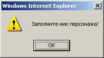
Аналогично мы поступим и с другими обязательными полями для чего напишем на
JavaScript простую функцию с названием
feedbackSubmit.
Эта функция вызывается автоматически, когда пользователь нажимает на кнопку
Регистрация, которая имеет следующий HTML-код:
| <INPUT class=SubmitButton
type=button value=Регистрация name=reg onClick="feedbackSubmit()"> |
Как вы заметили в событии
onClick
кнопки и вызывается наша функция,
которая теперь имеет в своем теле проверки всех необходимых элементов формы
(regform)
<script>
function feedbackSubmit(){
var cUserMail = document.regform.email.value;
if (document.regform.nickname.value=="") {
alert("Заполните ник персонажа!");
document.regform.nickname.focus();
return false;
}
if (document.regform.pass.value=="") {
alert("Поле пароля не должно оставаться пустыми!");
document.regform.pass.focus();
return false;
}
if ( (cUserMail.indexOf("@") == -1) || (cUserMail.indexOf(".") == -1) )
{
alert("Неправильно заполнено поле e-mail!");
document.regform.email.focus();
return false;
}
if (document.regform.fio.value=="") {
alert("Пожалуйста укажите ФИО!");
document.regform.fio.focus();
return false;
}
if (document.regform.law.checked==false)
{
alert("Вам нужно ознакомиться с правилами клуба!");
return false;
}
document.regform.submit();
}
</script>
|
Если все проверки
выполнены, то в самом конце функции выполняется команда
document.regform.submit()
и форма уходит к нам на
сервер.
Как Вы могли заметить, мы чуть сложнее проверяем на заполнение поле ввода
e-mail. Часто пользователи вводят туда просто набор букв или
цифр. Наша проверка позволит им придерживаться хоть и упрощенного, но правила
для ввода e-mail, проверяя, ввели ли они в названии
почтового ящика обязательные символы ( . и @
) . Само собой разумеется эта проверка примитивная и не
убережет от неправильного заполнения поля e-mail.
Более правильным будет следующая проверка правильности ввода
почтового ящика:
if (cUserMail
=='') {
alert("Пожалуйста
заполните поле E-Mail");
document.regform.email.focus();
return false
}
if (!(/^\w+([\.-]?\w+)*@\w+([\.-]?\w+)*(\.\w{2,4})+$/.test(cUserMail)))
{
alert('Введите правильное название почтового ящика!');
document.regform.email.focus();
return false
} |
Здесь
используется проверка при помощи поддерживаемого JavaScript
регулярного выражения. Но эта тема не для наших курсов, поэтому, если это
вызывает у Вас трудности, можете просто оставить простую проверку E-Mail.
Измененный текст файла
reg.phtml смотрите здесь.
1.4.
Обработка
и сохранение данных на сервере
Давайте посмотрим, как передаются данные, заполненной
пользователем анкеты в нашу таблицу
users
на стороне сервера. Как вы наверно заметили, в HTML
коде описывающем форму ключевой параметр
action
имеет значение
testreg.phtml.
| <form name=regform
action="testreg.phtml" method=POST> |
Это означает лишь
одно - файл с этим названием осуществляет прием и сохранение в таблицу
users значений из заполненной пользователем анкеты.
Так как передача значений осуществляется методом
Post (method=POST),
то и наша программа на языке
PHP должна принимать их этим методом. Делается это в
файле
testreg.phtml
так:
<?php
$aNickName = $_POST['nickname'];
$aPass = $_POST['pass'];
$aFIO = $_POST['fio'];
$aMail = $_POST['email'];
$aYear = $_POST['year'];
$aMonth = $_POST['month'];
$aDay = $_POST['day'];
$aDate = $aYear."-".$aMonth."-".$aDay; /*Собираем
в формат yyyy-mm-dd*/
$aAnswer = $_POST['answer'];
$aGender = $_POST['gender'];
if ($aGender=='Мужской'){
$aUserGender = 1;
}else{
$aUserGender = 2;
}
$aCity = $_POST['city'];
$aICQ = $_POST['icq'];
?> |
Как Вы успели
заметить, - это имена элементов формы в файле reg.phtml.
Все они принимаются в специальный служебный массив
$_POST и мы для удобства сохраняем эти значения в
переменные
$aNickName,$aPass,$aFIO.
и т.д.
После этой процедуры мы должны сделать проверку, не используется ли
введенный регистрирующимся пользователем логин? Если нет, сохраняем все значения
к нам в таблицу
users. Следующий фрагмент кода реализует это
действие:
$mysql_host = 'localhost';
$mysql_user = 'root';
$mysql_password = '';
$my_database = 'mmclub';
$link = mysql_connect($mysql_host, $mysql_user,
$mysql_password)
or die("Could not connect : " . mysql_error());
mysql_select_db($my_database) or
die("Could not select database");
$query = "SELECT * from users where Nick_Name = '$aNickName'";
$result = mysql_query($query,$link) or
die("Query failed : " .
mysql_error());
$num_rows = mysql_num_rows($result);
if( $num_rows == 0 ){
$query = "INSERT INTO
users(Nick_Name,User_Pass,Full_Name,User_Birth_Day,User_EMail,
Character_Birth_Day,Security_Answer,User_Gender,User_City,ICQ_Number)";
$query .= "Values ('$aNickName','$aPass','$aFIO',Now(),'$aMail','$aDate','$aAnswer','$aUserGender','$aCity','$aICQ')";
$result = mysql_query($query,$link) or
die("Query failed : " . mysql_error());
print("Юзер: $aNickName, с паролем: $aPass,
именем: $aFIO, Датой рождения: $aDate добавлен в базу!");
} else {
print("Юзер: $aNickName уже есть в игре,
выберите другой логин!");
}
mysql_close($link); |
Если Вы делаете
только первые шаги в программировании на
PHP, то мы сделаем беглый осмотр этого простого кода.
В языке
PHP есть целый набор встроенных функций для работы с
базой данных
MySQL. Для того чтоб подключиться к базе данных
MySQL, нам нужно использовать четыре параметра: хост,
логин и пароль пользователя в базе данных и имя базы данных. За это отвечают
соответственно переменные
$mysql_host,$mysql_user,
$mysql_password и $my_database,
которые мы инициализировали в начале выше приведенного фрагмента кода.
Затем мы используем функции
mysql_connect
и
mysql_select_db
для подключения и выбора базы
MySQL, куда передаем в качестве аргументов наши
переменные с названием хоста ('localhost'), логина('root')
, пароля('') и имени базы данных ('mmclub')
Если подключение не удачно, конструкция кода
... or
die("Could not connect : " .
mysql_error()); выдаст
в окно браузера сообщение об ошибке.
Теперь, когда мы подключились к базе, мы можем делать к ней запросы на языке
SQL. Первым нашим запросом будет попытка сделать выборку
из таблицы
users на предмет существования в ней логина, под которым
хочет зарегистрироваться новый пользователь.
Запрос имеет вид:
"SELECT * from users where
Nick_Name = '$aNickName'"
После выполнения функции
mysql_query,
которой мы в качестве аргумента передали эту строку запроса (в переменной
$query), мы
вызываем функцию
mysql_num_rows,
которая служит для возвращения количества строк результата предыдущего запроса.
То есть если таких строк 0 (
if( $num_rows == 0 )
) ,
значит пользователя с именем, содержащимся в переменной
$aNickName
нет и мы можем
его спокойно зарегистрировать в нашей таблице
users.
Этот запрос вставляет в таблицу
users все переданные поля из формы регистрации
INSERT INTO users(Nick_Name,User_Pass...)values('$aNickName','$aPass'..)
Если количество
строк отлично от 0 - значит пользователь с таким логином уже есть в таблице
users и мы отказываем новому пользователю в
регистрации, печатая в окно браузера:
print("Юзер:
$aNickName уже
есть в игре, выберите другой логин!");
Вот собственно и все! Файл
testreg.phtml
вы можете увидеть
здесь.
Теперь, когда пользователь занесен в таблицу
users он может в ходить в игру. Собственно пока
что игровых файлов у нас пока нет, но форму ввода логина и пароля для входа в
наш игровой мир мы сделать должны. Это обычно форма с двумя полями (логин,
пароль) и кнопкой (Войти)
Выглядит наша форма примерно так:
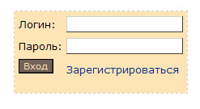
Ссылка Зарегистрироваться ведет на нашу страницу
регистрации. Так как форма входа в игру обычно располагается на самой первой
страничке игровых проектов, чтоб пользователь не искал ее долго, разместим
HTML код с этой формой в файле
index.phml - стартовом файле нашего проекта.
<FORM name=log_in action=login.phtml
method=post>
<p><img border="0" src="img/logo.gif"><br>
</p>
<TABLE width=200 cellSpacing=5 cellPadding=0 border=0
style="border-style: dashed; border-width: 1px" bgcolor="#FFE5B6">
<TR>
<TD>Логин:</TD>
<TD><INPUT name=login></TD>
</TR>
<TR>
<TD>Пароль:</TD>
<TD><INPUT type=password name=pass>
</TD>
</TR>
<TR>
<TD>
<INPUT class=loginButton type=submit value=Вход
name=sbm></p>
</TD>
<TD style="PADDING-BOTTOM: 10px" width="99%"><A href="reg.phtml">Зарегистрироваться</A>
</TD>
</TR>
</TABLE>
</FORM> |
Полный код
странички index.phtml - смотрите
здесь.
Как видно из из самой первой строки кода, после ввода логина и пароля, эти
данные передаются в файл
login.phtml,
методом POST.
Логика обработка переданных в файл
login.phtml
данных выглядит следующим образом:
<?php
$mysql_host = 'localhost';
$mysql_user = 'root';
$mysql_password = '';
$my_database = 'mmclub';
if ((!empty($_POST['login']))
&& (!empty($_POST['pass']))
)
{
$aNickName = $_POST['login'];
$aUserPass = $_POST['pass'];
$link = mysql_connect($mysql_host, $mysql_user,
$mysql_password)
or die("Could not connect : " .
mysql_error());
mysql_select_db($my_database) or
die("Could not select database");
$query = "SELECT * FROM users where Nick_Name='$aNickName'
and User_Pass='$aUserPass'";
$result = mysql_query($query) or die("Query
failed : " . mysql_error());
$line = mysql_fetch_array($result);
$aRes = $line["Nick_Name"];
if( $aRes === $aNickName )
{
$aRandVal = rand(0,1000000000);
$query = "UPDATE users SET SessionID='$aRandVal'
WHERE Nick_Name='$aNickName'";
$result = mysql_query($query) or die("Query
failed : " . mysql_error());
print('<SCRIPT>setCookie("MMCLUB_NICK_NAME","'.$aNickName.'");</SCRIPT>');
print('<SCRIPT>setCookie("MMCLUB_SESSION","'.$aRandVal.'");</SCRIPT>');
print('<SCRIPT>location.href="main.phtml?NickName='.$aNickName.'";</SCRIPT>');
}
else print('<SCRIPT>location.href="login_error.html";</SCRIPT>');
}
else print('<SCRIPT>location.href="login_error.html";</SCRIPT>');
?> |
Здесь Вам уже
много знакомо. В начале мы проверяем, не пустые ли значения переданных скрипту
параметров логина и пароля и затем, подключившись к нашей
базе mmclub узнаем при помощи SQL
запросов - есть ли такой пользователь и пароль для него в
таблице users.
Если такой пользователь есть, создаем случайный параметр сессии и пишем его в
cookie и в специально подготовленное для этих целей поле
в таблице users для этого пользователя, после чего
переадресуем его на главную страницу нашей игры main.phtml (которой
пока что нет, но мы ее сделаем в нашем следующем уроке):
$aRandVal = rand(0,1000000000);
$query = "UPDATE users SET SessionID='$aRandVal'
WHERE Nick_Name='$aNickName'";
$result = mysql_query($query) or die("Query
failed : " . mysql_error());
print('<SCRIPT>setCookie("MMCLUB_NICK_NAME","'.$aNickName.'");</SCRIPT>');
print('<SCRIPT>setCookie("MMCLUB_SESSION","'.$aRandVal.'");</SCRIPT>');
print('<SCRIPT>location.href="main.phtml?NickName='.$aNickName.'";</SCRIPT>'); |
setCookie -
эта функция написана на JavaScript и служит для записи
cookie для данного открытого окна браузера.
<SCRIPT>
function setCookie(name, value) {
document.cookie = name+"="+escape(value)+"; path=/";
}
</SCRIPT> |
Для чего все это
нужно? При входе в игру, мы будем проверять совпадение нашего (SessionID)
в таблице users для игрока со значением в
cookie
MMCLUB_SESSION
чтоб проверить правильность входа
пользователя в игру. Конечно мы могли бы использовать механизм сессий встроенный
в PHP, но так проще.
В случае несовпадений, программа переадресует пользователя на страницу ошибки:
login_error.html
Смотрите полный код скрипта, который отвечает за вход в игру
login.phtml
здесь.
1.5.
Добавление
правил безопасности.
Для того, чтоб немного защитить нашу игру от частых
регистраций при помощи разного рода программ автоматической регистрации на
веб-ресурсах сделаем очень простое добавление цифрового кода, который должен
ввести пользователь при регистрации. Для того чтоб не углубляться в эту тему (а
таких методов с применением как ввода цифрового кода, так и других сходных
способов защиты существует великое множество) мы сделаем с вами самый
примитивный вариант ввода цифрового кода.
И так нам понадобится кусочек кода на PHP
который по переданной ему строке с цифрами, сделает нам из нее
картинку в формате .gif. В PHP
есть специальная библиотечка php_gd2.dll которая
как раз и занимается работой с графическими данными. Эта библиотека поставляется
вместе с пакетом Denwer и находится в папке:
C:\WebServers\usr\local\php\extensions\
Для начала заготовим файл формата
.gif в который специальные функции из библиотеки
php_gd2.dll будут дорисовывать цифры. Вот этот файл:
code.gif - то есть это обычный
прямоугольник черного цвета.
Теперь напишем маленький фрагмент кода на
PHP, который будет рисовать в этот прямоугольник цифры:
<?php
if ( !empty($_GET['code']) ){
$code = $_GET['code'];
}
Header("Pragma: no-cache");
$pic = ImageCreateFromgif("img/code.gif");
Header("Content-type: image/gif");
$color=ImageColorAllocate($pic, 255, 125,
255);
ImageString($pic,4,12,1,$code,$color);
Imagegif($pic);
ImageDestroy($pic);
?> |
Как мы уже
говорили этот фрагмент кода, который мы поместим в файл
code.php
принимает методом GET строку из четырех цифр (например
1234) и затем при помощи функции
ImageString
рисует их в виде
графики в наш заранее подготовленный черный прямоугольник файла
code.gif. Строка
Header("Content-type: image/gif");
информирует
браузер, что ему передаются данные в виде рисунка и он их должен отобразить как
рисунок и никак иначе.
Теперь давайте немного изменим нашу регистрационную
форму, находящуюся в файле reg.phtml , добавив туда показ
этой картинки. Сделаем это так:
<INPUT
TYPE="text" NAME="digits" size=10 maxlength=40>
Введите код с картинки <font color="#FF0000">*</font>
<?php
$code = ''.mt_rand(1000,9999);
$md5code = md5($code);
echo "<img src=code.php?code=$code><p>";
?>
<input type="hidden" name="check" class=inup size="20" value="<?php
echo $md5code ?>"
|
Как видно из
кода, мы создаем случайное 4-хзначное число функцией
mt_rand
из диапазона 1000-9999 и
кодируем его при помощи функции PHP
md5
и затем помещаем в скрытое поле с
именем check (<input
type="hidden" name="check" class=inup size="20" value="<?php
echo $md5code ?>").
Картинка с цифрами отображается при помощи кода: (<img
src=code.php?code=$code>)
После того, как пользователь ввел цифры с картинки в добавленное поле
digits
нашей формы регистрации, вся эта информация обрабатывается
скриптом, содержащимся в файле testreg.phtm в который мы
внесем тоже небольшое изменение, добавив проверки ввода цифрового кода:
$md5code = $_POST['check'];
// кодированные md5 цифры
$code = $_POST['digits']; //
реальные цифры
if ($md5code === md5($code)){
...... // тут идет ранее
используемый код
} else {
print("Вы ввели неправильные цифры с картинки!");
}
|
Смотрите полный
код с учетом произведенных изменений в файлах
reg.phtml и testreg.phtml
Теперь наша регистрационная анкета выглядит так:
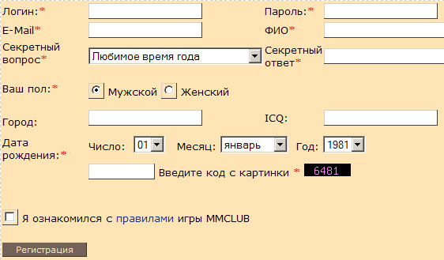
Каждое обновление страницы с в браузере с регистрационной анкетой будет вызывать
изменение цифрового кода на картинке. Это конечно пустяковая защита, но все же
лучше чем ничего.
Как Вы уже знаете из урока 1, нам следует собрать все написанные нами файлы в
папке C:\WebServers\home\mmclub\www
и картинки собрать в подкаталог img
вышеназванной папки. или скопируйте из папки WWW
второго урока все файлы в папку
C:\WebServers\home\mmclub\www
если вы не сделали этого ранее.
Теперь все готово для теста написанного нами проекта.
Набрав в строке браузера
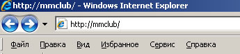
мы попадем на стартовую страницу нашей игры, где вы можете проверить вход в
систему или перейти на страницу регистрации нового пользователя в нашем проекте.
В следующем уроке мы создадим главный фрейм игры,
а также слагающие его элементы
Страницу нашего персонажа, страницу перечня игроков в игровой локации, страницу
управления и чата.
|
|
{kind=link}